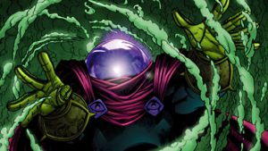
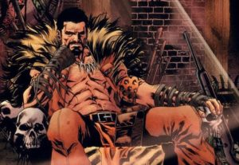

Meu nome é Alessandro Volker, atualmente moro em Blumenau - SC com minha
mulher e meus dois gatinhos.
Atualmente estou apenas estudando para que possa entrar na área de
técnologia e trabalhar com o que sempre sonhei.
Lista do que mais gosto de fazer
Comer
Beber
Jogar
Dormir
Sair pra conhecer lugares novos
Conteúdo que estou estudando
HTML
hiper texto
Tag, atributo, entidade
Estrutura do HTML
CSS
folha de estilo
herança e cascata
seletores, propriedades, funções, media query, at- rules
definição de layouts e estilos
animações
extenções de CSS
Star Wars
A trama se passa num passado distante, em uma galáxia repleta de planetas habitados por diferentes povos e espécies. Apesar de ter como fundo a ficção científica, Star Wars é, na verdade, uma saga de fantasia, recheada de toques de humor, drama, romance e, claro, o tema central: a luta entre o bem e o mal.
O foco central gira em torno de Luke Skywalker, um jovem que acaba envolvido na batalha entre um império tirano e um grupo de rebeldes libertários. É aí que o jovem conhece Darth Vader, um dos maiores vilões do cinema. Com a ajuda dos amigos e do treinamento recebido do icônico mestre Yoda, Luke deve se tornar um poderoso guerreiro para enfrentar o vilão e reestabelecer a paz na galáxia.
Esse enredo envolvente com certeza vai prender a atenção da garotada. Não é toa que existe até mesmo o Dia de Star Wars, uma data criada especialmente para os fãs da famosa franquia.
Existem vários personagens que usam o nome de Spider-Man, cada um com sua própria história e personalidade.
O personagem original, criado por Stan Lee e Steve Ditko, é Peter Parker, um adolescente que foi mordido por uma aranha radioativa e adquire habilidades sobre-humanas, como a capacidade de pular longas distâncias e sentir o perigo. Além dele, existem outras versões do personagem, como Miles Morales, um jovem afro-latino que também foi mordido por uma aranha, e Gwen Stacy, que adquire poderes após uma experiência científica.
Como mencionei anteriormente, existem vários personagens que usam o nome de Spider-Man. Além de Peter Parker, Miles Morales e Gwen Stacy, também existem outros personagens que foram inspirados no herói original. Alguns deles incluem Ben Reilly, um clone de Peter Parker que também tem habilidades de aranha; Otto Octavius, um cientista que adquire poderes após um acidente envolvendo tecnologia de aranha; e Spider-Man 2099, um herói do futuro que luta contra o crime na cidade de Nova York.
Vilões da saga
Multiverso dos vilões do Spider-Man

Esse é um dos mais memoráveis, tudo indica que veremos o personagem nas telonas em breve
Embora Wilson Fisk seja o maior vilão do Demolidor, graças a Frank Miller, o Rei teve suas primeiras aparições na revista do teioso.

Aqui coloquei personagens da família do caçador. Kraven é um dos personagens mais importantes da cronologia, em “A Última Caçada de Kraven” os fãs enlouqueceram com uma história magnífica.